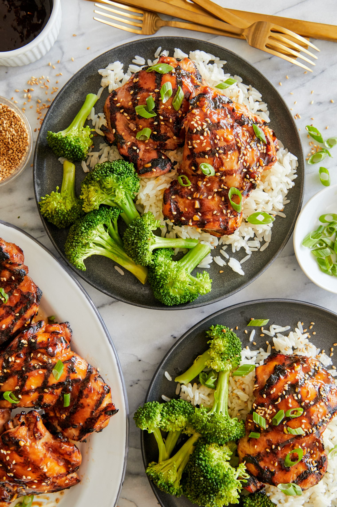

Teriyaki Chicken

Why is Teriyaki Chicken so GOOD?
This tastes just like your favorite Asian take-out but you can have this ready
than the time it would take to go pick up take-out! No marinade required.
I’ve shared other teriyaki chicken recipes like my Grilled Teriyaki Chicken Bowl
but this hands down beats the prep and cook time on any other teriyaki chicken I’ve tried.
And yet it tastes just as good!
Plus it’s such a flavorful sauce so it doesn’t even require marinating.
Ingredients
- 2 teaspoons cornstarch
- ½ cup reduced sodium soy sauce
- 3 tablespoons mirin
- 2 tablespoons brown sugar
- 1 tablespoons honey
- 1 tablespoon freshly grated ginger
- 3 cloves garlic, minced
- 2 teaspoons toasted sesame oil
- 2 pounds boneless, skinless chicken thighs
- 1 tablespoon canola oil
- 2 green onions, thinly sliced
- 1 teaspoon toasted sesame seeds
Steps
- TERIYAKI SAUCE: In a small saucepan over medium heat, combine 1/4 cup cold water and cornstarch. Stir in soy sauce, mirin, brown sugar, honey, ginger, garlic and sesame oil. Bring to a boil; reduce heat and simmer, stirring occasionally, until thickened, about 4-5 minutes. Let cool completely.
- In a gallon size Ziploc bag or large bowl, combine chicken and 1/2 cup TERIYAKI SAUCE; marinate for at least 2 hours to overnight, turning the bag occasionally. Drain the chicken from the marinade.
- Preheat grill to medium high heat. Brush chicken with canola oil.
- Add chicken to grill, and cook, turning occasionally, until chicken is completely cooked through, reaching an internal temperature of 165 degrees F, about 10 minutes. Brush chicken with TERIYAKI SAUCE, cooking for an additional 1-2 minutes.
- Serve immediately with remaining TERIYAKI SAUCE, garnished with green onions and sesame seeds, if desired.